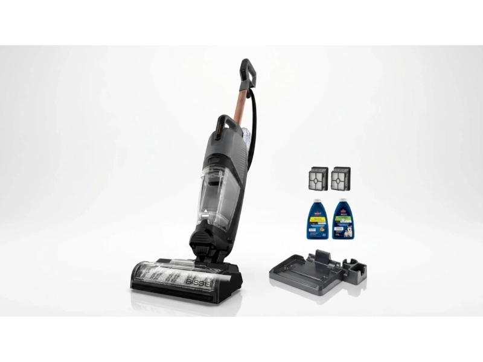
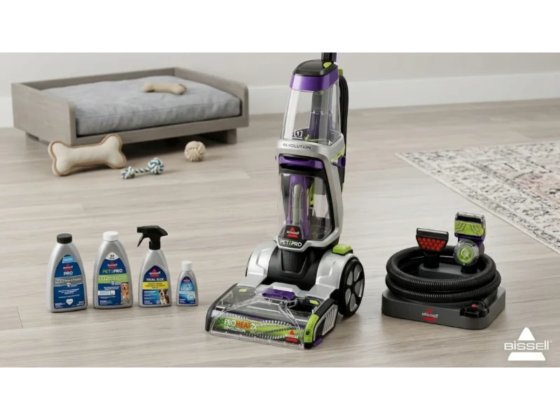
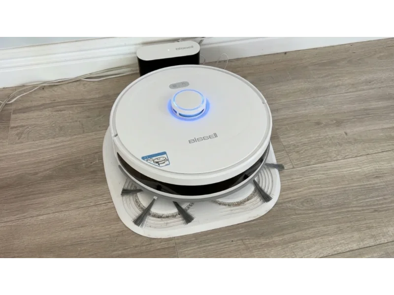

Bissell vacuum cleaners continue to hold a strong place in modern homes because they focus on real cleaning problems people face every day. From pet hair on sofas to muddy footprints on hard floors, the brand builds machines that target specific messes instead of offering one generic solution.
In 2026, cleaning needs are shifting toward faster routines, multi-surface cleaning, and compact tools that fit small living spaces. People do not just want power anymore. They want convenience, low maintenance, and machines that actually save time. That is where Bissell products stay relevant.
This guide breaks down the most useful Bissell vacuum cleaners available today, how they perform in real situations, and which one fits different household needs. Instead of focusing on hype, the goal here is to understand how each product works in daily life, what problems it solves, and where it may fall short.
Top 5 Best Bissell Vacuum Cleaners
The Bissell lineup in 2026 is built around task-based cleaning. Each product is designed for a specific purpose — pet hair removal, carpet deep cleaning, or hard floor washing. Understanding these differences helps users avoid buying the wrong machine for their home. Below are the most practical models people choose based on their cleaning needs:
- Bissell Little Green® Portable Carpet Cleaner — Best for Spot Cleaning
- Bissell CrossWave® HydroSteam™ Plus — Best for Hard Floors & Multi-Surface
- Bissell ProHeat 2X® Revolution® Pet Pro Plus — Best for Deep Carpet Cleaning
- Bissell Pet Hair Eraser® Turbo Plus — Best for Daily Pet Hair
- Bissell SpinWave® R5 Robotic Mop & Vacuum — Best for Hands-Free Cleaning
Now let's take a closer look at these vacuums.
1. Bissell Little Green® Portable Carpet Cleaner — Best for Spot Cleaning
The Bissell Little Green is designed for small but stubborn messes that happen daily in homes, cars, and on furniture. It is not a full-room cleaner. Instead, it targets spills, stains, and spot cleaning where larger machines are unnecessary or inconvenient to use. This compact cleaner is often used for quick response cleaning — whether it is coffee spills on a sofa, pet accidents on rugs, or food stains in a car seat, it provides a simple way to handle messes before they settle deep into fabric fibers.
Key Specs
The Little Green stands out because it combines portability with strong suction in a compact design. Its lightweight body makes it easy to move around the house or carry into a car. The 48 oz tank supports multiple spot cleanings without constant refilling, and strong suction helps pull out embedded dirt from upholstery and carpet fibers. Quick drying performance reduces moisture left behind after cleaning, and recycled plastic construction adds an eco-conscious design element.
Users often prefer this model because it removes the need for professional cleaning services for small incidents. It works best as a maintenance tool rather than a deep-clean machine — the right tool for the right moment rather than a replacement for full-sized cleaners.
- Compact and portable — easy to use in cars and on furniture
- 48 oz tank handles multiple spot cleanings per fill
- Strong suction for embedded upholstery dirt
- Quick-dry performance reduces moisture residue
- Not suitable for full-room or large-area cleaning
- Requires cleaning solution replenishment for ongoing use

2. Bissell CrossWave® HydroSteam™ Plus — Best for Hard Floors & Multi-Surface
The CrossWave HydroSteam Plus is built for users who want to reduce cleaning time by combining vacuuming and mopping into one process. It is designed for hard floors and sealed surfaces, making it ideal for kitchens, hallways, and mixed flooring homes. Instead of vacuuming first and mopping later, this machine handles both steps together — saving real time in daily routines.
Key Specs
HydroSteam technology helps loosen sticky or dried messes on floors while vacuuming debris at the same time. It works on sealed hard floors and area rugs without switching machines, and a self-cleaning cycle reduces manual brush cleaning after use. The tangle-resistant design helps manage hair buildup during cleaning, while continuous water flow keeps floors cleaner during each pass.
This model is especially useful in homes with kids or pets where floors get dirty frequently and require repeated cleaning throughout the week. The combination of steam, suction, and mopping in a single pass genuinely reduces effort compared to separate tools — which is where it earns its place over single-function vacuums.
- Vacuums and mops simultaneously — cuts cleaning time
- HydroSteam loosens dried and sticky messes
- Self-cleaning cycle reduces post-use maintenance
- Works across hard floors and area rugs without switching
- Not suitable for thick carpets or heavily soiled floors
- Water tanks need refilling during large cleaning sessions

3. Bissell ProHeat 2X® Revolution® Pet Pro Plus — Best for Deep Carpet Cleaning
The ProHeat 2X Revolution Pet Pro Plus is built for homes where carpets take the most damage. It focuses on deep carpet cleaning, especially when dirt, stains, and pet odors settle into thick fibers over time. This is not a quick-clean device — it is designed for heavy, repeated use where standard vacuums fall short. Regular vacuuming only cleans the top layer; this machine targets deeper layers using water, heat, and cleaning solution to lift embedded dirt.
Key Specs
Dual cleaning modes cover both deep stain removal and a fast-drying option. Express Clean mode helps carpets dry in about 30 minutes, which is a real convenience in high-traffic areas that need to be usable quickly. The Clean + Protect system helps reduce odor-causing bacteria inside fibers, and specialized pet tools handle furniture and upholstery cleaning. A removable brush cover makes post-cleaning maintenance easier.
What makes it useful is not just power but consistency. It performs well on old stains that have been sitting for weeks or even months, and helps refresh carpets that start to smell over time. For pet owners and families who need stronger carpet care than a standard vacuum can provide, this model fills a gap that nothing else in the Bissell lineup covers.
- Lifts embedded stains other vacuums leave behind
- Express Clean mode dries carpets in ~30 minutes
- Clean + Protect system reduces pet odors in fibers
- Includes specialized pet upholstery tools
- Requires regular maintenance after heavy use
- Cleaning solution needs ongoing replenishment
- Not a quick-clean device — takes time to set up and use properly

4. Bissell Pet Hair Eraser® Turbo Plus — Best for Daily Pet Hair
The Pet Hair Eraser Turbo Plus is designed for everyday pet messes like shedding fur, dander, and fine dust. It is an upright vacuum, making it suitable for regular home cleaning rather than occasional deep cleaning sessions. Pet owners often struggle with hair wrapping around brush rolls and reducing suction over time — this model focuses heavily on preventing that issue while maintaining steady cleaning performance across floors and furniture.
Key Specs
The tangle-free brush roll reduces hair wrap and manual cutting maintenance. The SmartSeal allergen system traps dust and prevents air leakage back into the room. Lightweight structure improves movement around furniture and tight corners, while a one-touch dirt emptying system keeps hands away from debris. Strong suction is designed for both carpets and hard floors.
The main advantage is reliability. It handles daily shedding without requiring frequent maintenance, which makes it suitable for busy households where pets shed constantly and cleaning needs to happen quickly and repeatedly. This is the model to reach for when the mess is ongoing rather than occasional.
- Tangle-free brush roll reduces hair wrap and manual maintenance
- SmartSeal allergen system traps fine dust and dander
- One-touch bin emptying keeps hands away from debris
- Lightweight and easy to maneuver around furniture
- Smaller dustbin needs more frequent emptying in heavy-shedding homes
- Filtration not as advanced as fully sealed HEPA systems

5. Bissell SpinWave® R5 Robotic Mop & Vacuum — Best for Hands-Free Cleaning
The SpinWave R5 is designed for hands-free cleaning. It combines vacuuming and mopping in a robotic system that operates automatically, and is most useful for people who want regular floor maintenance without spending time cleaning manually every day. In 2026, cleaning routines are shifting toward automation — people prefer devices that maintain cleanliness daily instead of deep cleaning once a week, and this robot fits that pattern.
Key Specs
2000 Pa suction handles dust, crumbs, and small debris, while active scrubbing pads remove sticky or dried spills. LiDAR mapping creates accurate floor plans for better navigation across rooms. App-based controls allow custom cleaning zones and restricted areas, and battery life supports extended cleaning sessions up to 140 minutes.
It works best for maintaining already-clean homes rather than handling heavy dirt buildup. Think of it as a daily upkeep tool — it runs scheduled cleaning cycles while you focus on other tasks, keeping floors consistently clean without manual input. For homes that want to reduce daily effort rather than replace deep-cleaning sessions entirely, the R5 fits that role well.
- Fully automated — runs on schedule without manual effort
- LiDAR mapping for accurate room navigation
- Vacuums and mops in a single pass
- Up to 140 min battery life for extended sessions
- Struggles with cluttered or highly uneven floors
- Not a replacement for deep-cleaning sessions
- Higher price point than standard robot vacuums
Which Bissell Vacuum is Best for Your Needs?
Choosing the right Bissell vacuum depends on the type of mess your home deals with most often. Each model serves a different cleaning purpose, so matching the tool to the problem is more important than choosing the most powerful option.
Small Spills, Sofas, and Car Interiors
The Little Green Portable Cleaner is the right call. It handles spot messes quickly and is compact enough to use anywhere — including car seats and furniture — without setting up a full-sized machine.
Hard Floors and Mixed Surfaces
The CrossWave HydroSteam Plus combines vacuuming and mopping in one pass. If your home has tile, hardwood, or laminate with the occasional rug, this removes the need for two separate cleaning steps.
Thick Carpets and Deep Stains
The ProHeat 2X Revolution Pet Pro Plus is built for this. Standard vacuums only clean the surface; this machine goes deeper using water, heat, and cleaning solution to lift embedded dirt and odors that have settled over weeks or months.
Daily Pet Hair and Shedding
The Pet Hair Eraser Turbo Plus is the most practical for daily use. Its tangle-free brush roll and one-touch emptying system keep maintenance low in homes where pets shed constantly.
Hands-Free Daily Maintenance
The SpinWave R5 Robot works best for keeping already-clean floors clean. Set a schedule, let it run, and reduce the daily effort of floor upkeep entirely. Many users pair it with one of the above for a complete cleaning setup.
Bissell vs. Competitors
Bissell competes with brands like Shark, Dyson, and Hoover in different segments of the cleaning market. Instead of trying to dominate every category, Bissell focuses on problem-specific cleaning tools. While competitors often highlight raw suction power or premium design, Bissell focuses more on practical cleaning situations like pet accidents, carpet stains, and multi-surface messes — making its products more task-oriented than general-purpose.
Bissell tends to offer better value in spot cleaners and carpet shampooers, has a strong focus on pet-related cleaning solutions, and provides more affordable entry points than premium brands like Dyson. Where it may fall behind is in high-end cordless vacuums or ultra-lightweight stick vacuum categories, where Dyson leads in design, portability, and smart sensor technology.
Comparison: Top 5 Bissell Vacuums Side by Side
| Model | Type | Best Use | Key Feature | Ongoing Cost |
|---|---|---|---|---|
| Little Green Portable | Portable spot cleaner | Spills, sofas, car interiors | 48 oz tank, portable design | Cleaning solution |
| CrossWave HydroSteam Plus | Vacuum + mop + steam | Hard floors, mixed surfaces | HydroSteam + self-cleaning cycle | Cleaning solution |
| ProHeat 2X Revolution Pet Pro Plus | Carpet deep cleaner | Thick carpets, old stains | Express Clean 30-min dry | Cleaning solution + maintenance |
| Pet Hair Eraser Turbo Plus | Upright vacuum | Daily pet hair, carpets & floors | Tangle-free brush roll | Filters |
| SpinWave R5 Robot | Robot vacuum + mop | Automated daily maintenance | LiDAR mapping, 140 min battery | Mopping pads |
Maintenance Tips to Extend Lifespan
Proper maintenance plays a big role in how long Bissell vacuums last and how well they perform over time. Many performance issues come from lack of cleaning after use rather than machine defects. Empty tanks immediately after each use to prevent odor buildup. Rinse brush rolls regularly, especially after carpet cleaning. Clean filters every few weeks depending on usage frequency. Check hoses for blockages if suction decreases. Use only recommended cleaning solutions to avoid internal damage. A well-maintained machine not only lasts longer but also performs closer to its original suction and cleaning efficiency.
Frequently Asked Questions
Which Bissell vacuum is best for pet hair?
The Pet Hair Eraser Turbo Plus is the best for daily pet hair maintenance. For pet stains embedded in carpet, the ProHeat 2X Revolution Pet Pro Plus goes deeper and handles odors that regular vacuums miss.
Can the CrossWave HydroSteam Plus replace a mop and a vacuum?
For hard floors and light messes, yes. It handles both in a single pass. For thick carpets or heavily soiled floors, it is not a replacement — those situations need the ProHeat or a dedicated vacuum.
Is the Little Green only for carpets?
No. It works on upholstery, car seats, pet beds, area rugs, and any fabric surface where spot cleaning is needed. It is not designed for large floor areas.
How often should I clean the filters on Bissell vacuums?
Every few weeks with regular use. In homes with pets or heavy shedding, check filters more frequently. Clogged filters are one of the most common causes of suction loss.
Is Bissell worth it compared to Dyson or Shark?
For task-specific cleaning like carpet shampooing, spot cleaning, and pet hair tools, Bissell offers strong value at a lower price point. For high-end cordless performance or smart sensor technology, Dyson leads. The right brand depends on what cleaning problems you actually face.
Can I use any cleaning solution in Bissell machines?
No. Use only Bissell-recommended cleaning formulas. Third-party solutions can damage internal components, void warranties, and leave residue that affects performance over time.
Conclusion & Final Recommendations
Bissell continues to succeed by building machines that solve specific cleaning problems instead of trying to be universal solutions. From small spill cleaners to robotic systems, each product serves a clear role in a modern household.
The key to getting value from Bissell in 2026 is choosing based on your actual cleaning habits. For spot messes, the Little Green is unmatched in portability. For hard floor efficiency, the CrossWave HydroSteam Plus saves real time. For deep carpet care, the ProHeat 2X goes where regular vacuums can't. For daily pet ownership, the Pet Hair Eraser Turbo Plus keeps maintenance low. And for hands-off floor upkeep, the SpinWave R5 runs the routine for you.
When matched correctly to your home and cleaning habits, these machines reduce effort, save time, and make daily cleaning much more manageable.